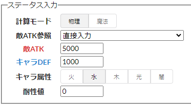
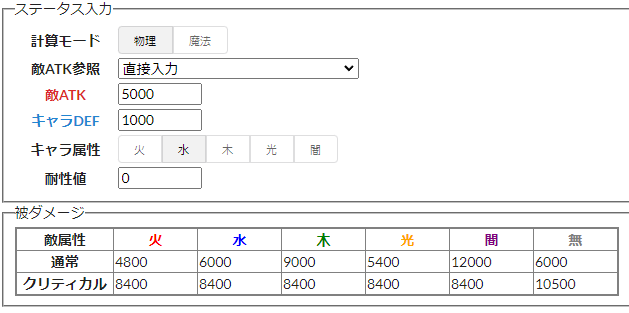

このサイトは、チョコットランドの被ダメージを計算するサイトです。
以下のように使います。
キャラのステータスや、敵のステータスなどを入力します。

上記の画像のように、キャラや敵のステータスを入力してください。
画像の例では、
となっています。
※敵の攻撃情報については、このサイトでは調べられません。
敵の情報を調べるのが大変な時は、「敵ATK参照/敵MAT参照」を使って数値を参照することができます。
主要な敵をリストアップしています。
※リストは作成者の独断と偏見により作成されています。
また、リストの数値は作成者が集めた情報を元に設定されており、正確ではない可能性があります。
想定される被ダメージの結果が表示されます。
下記の画像は、ステータス入力のような敵・キャラの時の被ダメージの例です。

※敵がスキルを使用した時の被ダメージについては、このサイトでは調べられません。